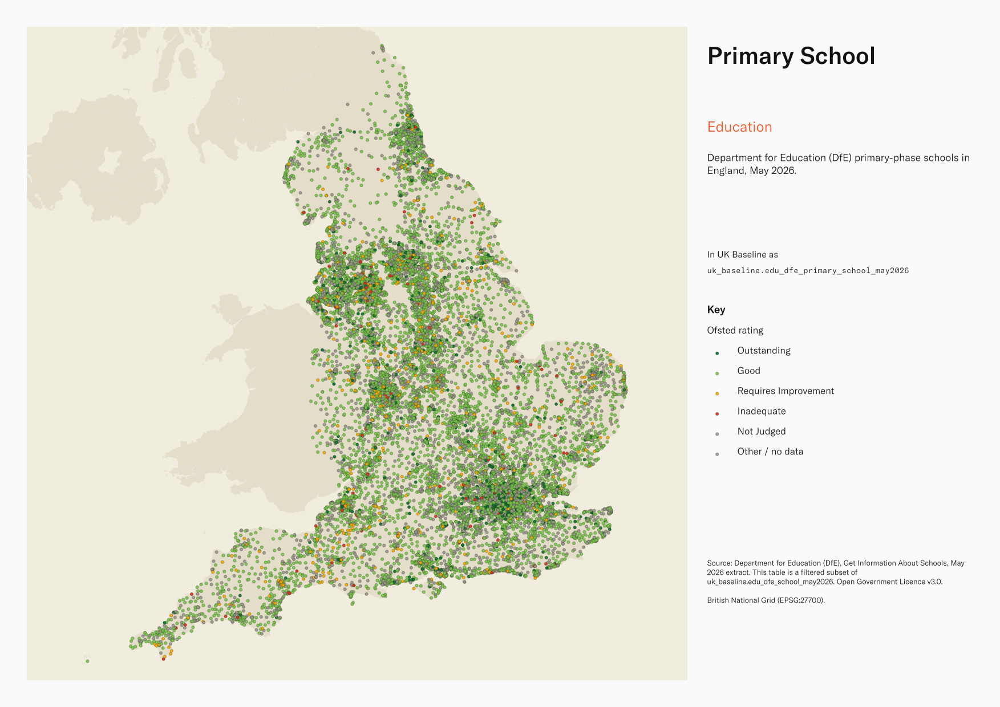
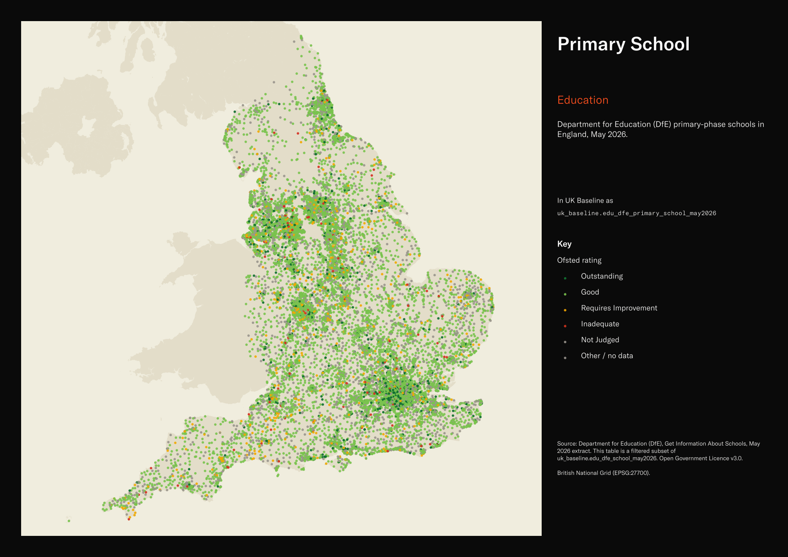

Department for Education (DfE) primary-phase schools in England, May 2026¶
Primary School
edu_dfe_primary_school_may2026


SOURCE
- Department for Education (DfE), Get Information About Schools, May 2026 extract. This table is a filtered subset of uk_baseline.edu_dfe_school_may2026.
- Ofsted, Management Information — state-funded schools — latest inspections as at 28 Feb 2026. Source of the two enriched columns ofsted_overall_rate_code and ofsted_overall_rate (see ENRICHMENT).
DOCUMENTATION
- DfE schools service : https://get-information-schools.service.gov.uk/
- DfE schools gov.uk guidance : https://www.gov.uk/guidance/get-information-about-schools
- DfE schools field glossary : https://www.get-information-schools.service.gov.uk/glossary
- Ofsted inspection outcomes : https://www.gov.uk/government/statistical-data-sets/monthly-management-information-ofsteds-school-inspections-outcomes
- Parent table : uk_baseline.edu_dfe_school_may2026
DEFINITIONS
- DfE phase classification:
- Primary — primary-phase school (statutory ages typically 4-11).
- Middle deemed primary — middle school covering an age range categorised as primary-phase under DfE's deeming rules.
- All-through — covers primary and secondary phases in one establishment.
- See parent (uk_baseline.edu_dfe_school_may2026) for full URN / phase / status definitions and the glossary reference.
SCOPE
- England only. 16,865 rows, one per primary-phase open URN.
- Includes three primary-phase groupings: Primary, Middle deemed primary, and All-through.
- Includes open schools only (status Open, or Open but proposed to close).
- Excludes Closed primaries: about 13,300 of the 30,100 Primary-phase records in the parent are Closed and are dropped here.
CRS
- EPSG:27700 (OSGB 1936 / British National Grid). Geometry type MultiPoint (one point per URN).
LICENCE
- Open Government Licence v3.0.
DATA QUALITY CAVEATS
- Geography keys are NULL on 1 of 16,865 rows, measured 25 August 2026: 1 fall inside an England or Wales district and could carry one, so their keys are a gap rather than an absence.
- County and Spatial Development Strategy columns are England and Wales only; rows elsewhere carry no county or SDS. Wales and the Isles of Scilly carry a county but no SDS. Rows with no Local Authority District code are NULL in all four columns.
- "All-through" schools appear in BOTH this primary subset and the secondary subset — they cover both phases by design. Count 203 in the parent; sum-of-subsets will double-count them.
- ofsted_overall_rate / _code are NULL where no clean graded inspection or qualifying ungraded-reaffirm outcome maps to the URN. Do not treat NULL as "Inadequate".
ENRICHMENT
sds_name/sds_group— Spatial Development Strategy area and devolution status, a Prior + Partners categorisation over Ministry of Housing, Communities and Local Government (MHCLG) English devolution policy, joined at load on the row's Local Authority District 2025 code via uk.ref_lad25_ctyua25_sds_lu_jul2026.msoa21hclnm— House of Commons Library readable MSOA name, joined at load onmsoa_codefrom House of Commons Library MSOA Names v2.3 (13 February 2026). Open Parliament Licence.ofsted_overall_rate_code,ofsted_overall_rate— headline Ofsted grade, as a 1-4 code plus text label, from Ofsted Management Information (see SOURCE), joined on URN. NULL where no clean grade is available; see column comments for the full derivation. Grades:- 1 — Outstanding
- 2 — Good
- 3 — Requires Improvement
- 4 — Inadequate
DERIVED FROM
- uk_baseline.edu_dfe_school_may2026. Subset created 13 May 2026.
LOADED INTO uk_baseline
- Loaded by PNC, 13 May 2026.
Columns¶
| Column | Type | Description / unit |
|---|---|---|
urn |
integer |
Source field "URN"; Unique Reference Number — DfE's primary identifier for the establishment. Sequential, unique across England, never reused. |
la_ |
text |
Source field "LA (code)"; 3-digit DfE Local Authority code (legacy DfE numeric LA code, not ONS GSS). |
la_ |
text |
Source field "LA (name)"; Local Authority name. |
establishment_ |
integer |
Source field "EstablishmentNumber"; 4-digit DfE establishment number, unique within Local Authority. Combined with la_code forms the 7-digit DfE number. |
establishment_ |
text |
Source field "EstablishmentName"; school's official name as published. |
type_ |
text |
Source field "TypeOfEstablishment (code)"; DfE code for type of establishment. |
type_ |
text |
Source field "TypeOfEstablishment (name)"; human-readable type of establishment (e.g. "Community school", "Voluntary aided school", "Academy converter", "Special school"). |
establishment_ |
text |
Source field "EstablishmentTypeGroup (code)"; DfE code for the high-level establishment-type grouping. |
establishment_ |
text |
Source field "EstablishmentTypeGroup (name)"; high-level grouping of type_of_establishment (e.g. "Local authority maintained schools", "Academies", "Special schools"). |
establishment_ |
text |
Source field "EstablishmentStatus (code)"; DfE code for establishment status. |
establishment_ |
text |
Source field "EstablishmentStatus (name)"; one of: Open / Closed / Open, but proposed to close / Proposed to open. |
reason_ |
text |
Source field "ReasonEstablishmentOpened (code)"; DfE code for reason the establishment opened. |
reason_ |
text |
Source field "ReasonEstablishmentOpened (name)"; human-readable reason for opening (e.g. "Not applicable", "New Provision", "Result of Amalgamation"). |
open_ |
text |
Source field "OpenDate"; date the establishment opened. Stored as text, not a typed date. |
reason_ |
text |
Source field "ReasonEstablishmentClosed (code)"; DfE code for reason the establishment closed. NULL for open schools. |
reason_ |
text |
Source field "ReasonEstablishmentClosed (name)"; human-readable reason for closure. NULL for open schools. |
close_ |
text |
Source field "CloseDate"; date the establishment closed (NULL for open establishments). Stored as text. |
phase_ |
text |
Source field "PhaseOfEducation (code)"; DfE code for the phase of education. |
phase_ |
text |
Source field "PhaseOfEducation (name)"; one of: Nursery / Primary / Middle deemed primary / Secondary / Middle deemed secondary / All-through / 16 plus / Not applicable. |
statutory_ |
integer |
Source field "StatutoryLowAge"; lowest statutory age the establishment is registered to admit. Unit: "years". |
statutory_ |
integer |
Source field "StatutoryHighAge"; highest statutory age the establishment is registered to admit. Unit: "years". |
boarders_ |
text |
Source field "Boarders (code)"; DfE code for boarders provision flag. |
boarders_ |
text |
Source field "Boarders (name)"; boarders provision flag (e.g. "Boarders", "No boarders"). |
nursery_ |
text |
Source field "NurseryProvision (name)"; whether the establishment provides nursery places (e.g. "Has Nursery Classes", "No Nursery Classes"). |
official_ |
text |
Source field "OfficialSixthForm (code)"; DfE code for official sixth-form indicator. |
official_ |
text |
Source field "OfficialSixthForm (name)"; official sixth-form indicator. |
gender_ |
text |
Source field "Gender (code)"; DfE code for pupil intake gender classification. |
gender_ |
text |
Source field "Gender (name)"; pupil intake gender classification (Mixed / Boys / Girls). |
religious_ |
text |
Source field "ReligiousCharacter (code)"; DfE code for religious character. |
religious_ |
text |
Source field "ReligiousCharacter (name)"; religious character (e.g. "None", "Church of England", "Roman Catholic", "Muslim"). |
religious_ |
text |
Source field "ReligiousEthos (name)"; religious ethos (used where religious_character is "None" but the school operates with a faith ethos). |
diocese_ |
text |
Source field "Diocese (code)"; DfE diocese code (for Church of England / Roman Catholic schools). |
diocese_ |
text |
Source field "Diocese (name)"; human-readable diocese name. |
admissions_ |
text |
Source field "AdmissionsPolicy (code)"; DfE code for admissions policy. |
admissions_ |
text |
Source field "AdmissionsPolicy (name)"; admissions policy (e.g. "Comprehensive (secondary)", "Non-selective", "Selective"). |
school_ |
integer |
Source field "SchoolCapacity"; DfE-reported maximum pupil capacity. Unit: "pupils". |
special_ |
text |
Source field "SpecialClasses (code)"; DfE flag for presence of special classes. |
special_ |
text |
Source field "SpecialClasses (name)"; human-readable special-classes flag. |
census_ |
text |
Source field "CensusDate"; reference date for the pupil-count census fields (number_of_pupils, number_of_boys, number_of_girls). Stored as text. |
number_ |
integer |
Source field "NumberOfPupils"; total pupils on roll at the census_date. Unit: "pupils". |
number_ |
integer |
Source field "NumberOfBoys"; boys on roll at the census_date. Unit: "pupils". |
number_ |
integer |
Source field "NumberOfGirls"; girls on roll at the census_date. Unit: "pupils". |
percentage_ |
numeric |
Source field "PercentageFSM"; percentage of pupils eligible for and claiming free school meals at the census_date. Unit: "percent (0 to 100)". |
trust_ |
text |
Source field "TrustSchoolFlag (code)"; DfE Trust school flag code. |
trust_ |
text |
Source field "TrustSchoolFlag (name)"; Trust school flag (human-readable). |
trusts_ |
text |
Source field "Trusts (code)"; DfE Trust identifier (where the school is part of a Multi-Academy Trust). |
trusts_ |
text |
Source field "Trusts (name)"; Trust name. |
school_ |
text |
Source field "SchoolSponsorFlag (name)"; whether the school has a sponsor (typical for sponsored academies). |
school_ |
text |
Source field "SchoolSponsors (name)"; sponsor organisation name(s). |
federation_ |
text |
Source field "FederationFlag (name)"; whether the school is part of a federation. |
federations_ |
text |
Source field "Federations (code)"; DfE federation identifier. |
federations_ |
text |
Source field "Federations (name)"; federation name. |
ukprn |
text |
Source field "UKPRN"; UK Provider Reference Number — 8-digit identifier used by UK Register of Learning Providers (UKRLP). Populated where the establishment is a registered learning provider. |
fehe_ |
text |
Source field "FEHEIdentifier"; Further/Higher Education identifier. Populated for FE / HE establishments. |
further_ |
text |
Source field "FurtherEducationType (name)"; type of further education provision (e.g. "Sixth Form Centres", "General Further Education college"). |
last_ |
text |
Source field "LastChangedDate"; date the record was last edited. Stored as text. |
street |
text |
Source field "Street"; street address line. |
locality |
text |
Source field "Locality"; locality. |
address3 |
text |
Source field "Address3"; third address line (additional area / settlement). |
town |
text |
Source field "Town"; town. |
county_ |
text |
Source field "County (name)"; county name. |
postcode |
text |
Source field "Postcode"; postcode. |
school_ |
text |
Source field "SchoolWebsite"; school's website URL. |
telephone_ |
text |
Source field "TelephoneNum"; school's published contact phone number. |
head_ |
text |
Source field "HeadTitle (name)"; head teacher's title (Mr / Mrs / Dr / etc.). |
head_ |
text |
Source field "HeadFirstName"; head teacher's first name. |
head_ |
text |
Source field "HeadLastName"; head teacher's last name. |
head_ |
text |
Source field "HeadPreferredJobTitle"; head teacher's preferred job title (Headteacher / Principal / Executive Headteacher / etc.). |
bso_ |
text |
Source field "BSOInspectorate (name)"; British Schools Overseas inspectorate name (for BSO-accredited establishments). |
inspectorate_ |
text |
Source field "InspectorateReport"; URL of the latest inspection report. |
date_ |
text |
Source field "DateOfLastInspectionVisit"; date of last Ofsted (or other inspectorate) visit. Stored as text. |
next_ |
text |
Source field "NextInspectionVisit"; scheduled date of next inspection visit. Stored as text. |
teen_ |
text |
Source field "TeenMoth (name)"; teenage mothers' unit flag. |
teen_ |
integer |
Source field "TeenMothPlaces"; teenage mothers' unit place count. Unit: "places". |
ccf_ |
text |
Source field "CCF (name)"; Childcare Funding flag. |
senpru_ |
text |
Source field "SENPRU (name)"; SEN Pupil Referral Unit flag. |
ebd_ |
text |
Source field "EBD (name)"; Emotional and Behavioural Difficulties unit flag. |
places_ |
integer |
Source field "PlacesPRU"; Pupil Referral Unit place count. Unit: "places". |
ftprov_ |
text |
Source field "FTProv (name)"; Full-Time Provision flag. |
ed_ |
text |
Source field "EdByOther (name)"; "Educated by Other" flag (for pupils educated outside mainstream provision). |
section41_ |
text |
Source field "Section41Approved (name)"; Section 41-approved special school flag. |
sen1_ |
text |
Source field "SEN1 (name)"; SEN need category 1 flag — populated with the name of the need where the school is registered to provide for it, NULL otherwise. See DfE schools glossary for the canonical 13-need list. |
sen2_ |
text |
Source field "SEN2 (name)"; SEN need category 2 flag — populated with the name of the need where the school is registered to provide for it, NULL otherwise. |
sen3_ |
text |
Source field "SEN3 (name)"; SEN need category 3 flag — populated with the name of the need where the school is registered to provide for it, NULL otherwise. |
sen4_ |
text |
Source field "SEN4 (name)"; SEN need category 4 flag — populated with the name of the need where the school is registered to provide for it, NULL otherwise. |
sen5_ |
text |
Source field "SEN5 (name)"; SEN need category 5 flag — populated with the name of the need where the school is registered to provide for it, NULL otherwise. |
sen6_ |
text |
Source field "SEN6 (name)"; SEN need category 6 flag — populated with the name of the need where the school is registered to provide for it, NULL otherwise. |
sen7_ |
text |
Source field "SEN7 (name)"; SEN need category 7 flag — populated with the name of the need where the school is registered to provide for it, NULL otherwise. |
sen8_ |
text |
Source field "SEN8 (name)"; SEN need category 8 flag — populated with the name of the need where the school is registered to provide for it, NULL otherwise. |
sen9_ |
text |
Source field "SEN9 (name)"; SEN need category 9 flag — populated with the name of the need where the school is registered to provide for it, NULL otherwise. |
sen10_ |
text |
Source field "SEN10 (name)"; SEN need category 10 flag — populated with the name of the need where the school is registered to provide for it, NULL otherwise. |
sen11_ |
text |
Source field "SEN11 (name)"; SEN need category 11 flag — populated with the name of the need where the school is registered to provide for it, NULL otherwise. |
sen12_ |
text |
Source field "SEN12 (name)"; SEN need category 12 flag — populated with the name of the need where the school is registered to provide for it, NULL otherwise. |
sen13_ |
text |
Source field "SEN13 (name)"; SEN need category 13 flag — populated with the name of the need where the school is registered to provide for it, NULL otherwise. |
type_ |
text |
Source field "TypeOfResourcedProvision (name)"; type of resourced provision for SEN. |
resourced_ |
integer |
Source field "ResourcedProvisionOnRoll"; pupils on roll in the resourced provision. Unit: "pupils". |
resourced_ |
integer |
Source field "ResourcedProvisionCapacity"; capacity of the resourced provision. Unit: "places". |
sen_ |
integer |
Source field "SENUnitOnRoll"; pupils on roll in the SEN unit. Unit: "pupils". |
sen_ |
integer |
Source field "SENUnitCapacity"; capacity of the SEN unit. Unit: "places". |
gor_ |
text |
Source field "GOR (code)"; DfE-published Government Office Region code (legacy DfE region classification). |
gor_ |
text |
Source field "GOR (name)"; Government Office Region name. |
district_ |
text |
Source field "DistrictAdministrative (code)"; DfE-published Local Authority District code (may differ from current ONS LAD25). |
district_ |
text |
Source field "DistrictAdministrative (name)"; Local Authority District name (DfE-published edition). |
administrative_ |
text |
Source field "AdministrativeWard (code)"; DfE-published Electoral Ward code. |
administrative_ |
text |
Source field "AdministrativeWard (name)"; Electoral Ward name (DfE-published edition). |
parliamentary_ |
text |
Source field "ParliamentaryConstituency (code)"; DfE-published Parliamentary constituency code. |
parliamentary_ |
text |
Source field "ParliamentaryConstituency (name)"; Parliamentary constituency name (DfE-published edition). |
urban_ |
text |
Source field "UrbanRural (code)"; ONS urban/rural classification code. |
urban_ |
text |
Source field "UrbanRural (name)"; ONS urban/rural classification name. |
gss_ |
text |
Source field "GSSLACode (code)"; ONS GSS 9-character Local Authority code (e.g. "E08000019"). |
easting |
integer |
Source field "Easting"; school location easting. Unit: "metres" (EPSG:27700). |
northing |
integer |
Source field "Northing"; school location northing. Unit: "metres" (EPSG:27700). |
msoa_ |
text |
Source field "MSOA (code)"; Middle-layer Super Output Area (MSOA) code. |
msoa_ |
text |
Source field "MSOA (name)"; MSOA name. |
lsoa_ |
text |
Source field "LSOA (code)"; Lower-layer Super Output Area (LSOA) code. |
lsoa_ |
text |
Source field "LSOA (name)"; LSOA name. |
inspectorate_ |
text |
Source field "Inspectorate (name)"; inspectorate body for the establishment (Ofsted for state schools; ISI / other for independent). |
sen_ |
integer |
Source field "SenStat"; count of pupils with a statutory Education, Health and Care (EHC) plan. Unit: "pupils". |
sen_ |
integer |
Source field "SenNoStat"; count of pupils with SEN support but no EHC plan. Unit: "pupils". |
boarding_ |
text |
Source field "BoardingEstablishment (name)"; whether the school operates as a boarding establishment. |
props_ |
text |
Source field "Props (name)"; proprietor / proprietorship name (for independent schools). |
previous_ |
text |
Source field "PreviousLA (code)"; previous DfE Local Authority code (for schools that have transferred between LAs). |
previous_ |
text |
Source field "PreviousLA (name)"; previous Local Authority name. |
previous_ |
integer |
Source field "PreviousEstablishmentNumber"; previous establishment_number (for re-numbered establishments). |
country_ |
text |
Source field "Country (name)"; country (always "England" in this dataset). |
uprn |
text |
Source field "UPRN"; Unique Property Reference Number — GeoPlace's identifier for the building/site. |
site_ |
text |
Source field "SiteName"; school site name (where the establishment occupies a named site). |
qab_ |
text |
Source field "QABName (code)"; Quality Assurance Body code (for accredited independent schools). |
qab_ |
text |
Source field "QABName (name)"; Quality Assurance Body name. |
establishment_ |
text |
Source field "EstablishmentAccredited (code)"; DfE accredited-status code (for accredited independent schools). |
establishment_ |
text |
Source field "EstablishmentAccredited (name)"; human-readable accredited status. |
qab_ |
text |
Source field "QABReport"; URL of the latest QAB report. |
ch_ |
text |
Source field "CHNumber"; Children's Home registration number (for residential special schools). |
fsm |
integer |
Source field "FSM"; absolute count of pupils eligible for and claiming free school meals at the census_date. Unit: "pupils". |
accreditation_ |
text |
Source field "AccreditationExpiryDate"; date the establishment's accreditation expires (for accredited independent schools). Stored as text. |
fid_ |
integer |
ArcGIS source identifier preserved at load; row identifier from the originating file. |
lad25cd |
character varying(9) |
Local Authority District 2025 code: the current geographic district of the school, best-fit from msoa21cd via the ONS MSOA (2021) to LAD (2025) best-fit lookup. Maintaining education authority is in gss_la_code/la_name. Open Government Licence v3.0. |
lad25nm |
character varying(100) |
Local Authority District 2025 name: the current geographic district of the school, best-fit from msoa21cd via the ONS MSOA (2021) to LAD (2025) best-fit lookup. Maintaining education authority is in gss_la_code/la_name. Open Government Licence v3.0. |
rgn22cd |
character varying |
Joined at load from ONS LAD->Region lookup; 2022 Region GSS code. |
rgn22nm |
character varying |
Joined at load from ONS LAD->Region lookup; 2022 Region name. |
geom |
geometry( |
MultiPoint in EPSG:27700. School location point (one point per URN; MultiPoint typmod is a Postgres convention). |
fid |
bigint |
|
ofsted_ |
smallint |
Headline Ofsted grade code 1-4 (1=Outstanding, 2=Good, 3=Requires Improvement, 4=Inadequate). NULL when no clean grade is available (includes 'Not Judged' and ambiguous ungraded outcomes). Sourced from OEIF + extended ungraded-reaffirm fallback. Fallback option B applied 14 May 2026. |
ofsted_ |
text |
Headline Ofsted rating text (Title Case). Sourced from OEIF graded inspection (col 67); for rows where OEIF was NULL, filled from the latest ungraded reaffirm outcome: 'School remains Outstanding' and 'School remains Outstanding (Concerns) - S5 Next' -> 'Outstanding'; 'School remains Good', 'School remains Good (Concerns) - S5 Next' and 'School remains Good (Improving) - S5 Next' -> 'Good'. Other ungraded outcomes (Standards maintained, Improved significantly, Some aspects not as strong) intentionally left NULL. Fallback option B applied 14 May 2026. |
msoa21hclnm |
text |
House of Commons Library readable MSOA name, joined on the source msoa_code from House of Commons Library MSOA Names v2.3 (13 February 2026). Open Parliament Licence. |
msoa21cd |
text |
Source field msoa_code (Department for Education, the school's 2021 Middle Layer Super Output Area). Populated only where the source code is a valid 2021 MSOA. Open Government Licence v3.0. |
msoa21nm |
text |
Official ONS Middle Layer Super Output Area 2021 name, joined on msoa21cd from uk_baseline.adm_ons_msoa_boundary_2021. Open Government Licence v3.0. |
lad22cd |
text |
Local Authority District 2022 code: the geographic district of the school (2021 LAD geography), best-fit from msoa21cd via the ONS MSOA (2021) to LAD (2022) best-fit lookup. The school's maintaining education authority (county-level in two-tier areas) is held separately in gss_la_code/la_name. Open Government Licence v3.0. |
lad22nm |
text |
Local Authority District 2022 name: the geographic district of the school, best-fit from msoa21cd via the ONS MSOA (2021) to LAD (2022) best-fit lookup. Maintaining education authority is in gss_la_code/la_name. Open Government Licence v3.0. |
ctyua25cd |
text |
County or unitary authority code at 1 April 2025. Joined at load via uk.ref_lad25_ctyua25_sds_lu_jul2026 on the row's Local Authority District 2025 code. Open Government Licence v3.0. |
ctyua25nm |
text |
County or unitary authority name at 1 April 2025. Joined at load via uk.ref_lad25_ctyua25_sds_lu_jul2026 on the row's Local Authority District 2025 code. Open Government Licence v3.0. |
sds_ |
text |
Spatial Development Strategy (SDS) area, a Prior + Partners categorisation over Ministry of Housing, Communities and Local Government (MHCLG) English devolution policy. Joined at load via uk.ref_lad25_ctyua25_sds_lu_jul2026 on the row's Local Authority District 2025 code. Open Government Licence v3.0. |
sds_ |
text |
Devolution status of the Spatial Development Strategy area: Existing Devolution Footprints, Devolution Priority Programme, Other Proposed Geographies or Remaining Areas. Joined at load via uk.ref_lad25_ctyua25_sds_lu_jul2026 on the row's Local Authority District 2025 code. Open Government Licence v3.0. |